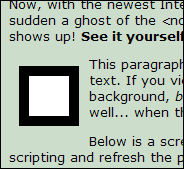

The <noscript> element
The contents of a <noscript> element should only be displayed when there is no script engine or running of scripts is switched off. The <noscript> tag originated in those olden days when some browsers didn't have JavaScript on board. Nowadays the tag has lost much of its value, as all browsers have script support for decades, and only a very limited number of users switches off JavaScript in daily practice. Nevertheless, the <noscript> tag isn't deprecated, and remains valuable in these limited situations.
The bug
In Internet Explorer 8's default view, the <noscript> element can experience a wonderous transformation. This will happen when you style the <noscript> element to have a background-color or a border, so as to have it clearly show up in the unfortunate case there is no script support.
Below is a graphic of what would be seen in such a scriptless browser:
Image 1
Now, with Internet Explorer 8, heralded to finally be in support of the standards, and with its script engine running at full swing, a strange 'ghost' of the <noscript> element appears. See it yourself, by viewing this page in IE8.
This paragraph is preceeded by a noscript element with left floating, borders and a background, along with the script warning text. If you view the page in IE8 you will see a ghost of the floated noscript element complete with borders, padding and background, but with no text content. IE8 apparently forgets that the <noscript> element, should only be displayed when, well... when there is no script.
Below is a screenshot showing what IE8 renders with scripting enabled.
Image 2
The ghost can vary in appearance depending on its display property value. If it's made "block" it will always show in IE8, but if it's "inline" then the ghost will disappear when "compatibility mode" is enabled, probably because of the way IE7 handled inline elements in general.
Web-developers across the world were so happy IE8 was finally going to relieve them of the burden of 'fixing the site for IE', but as it appears, Internet Explorer continues to cause extra work, preventing web-developers from working efficiently...
Updated last: April 20th, 2009.